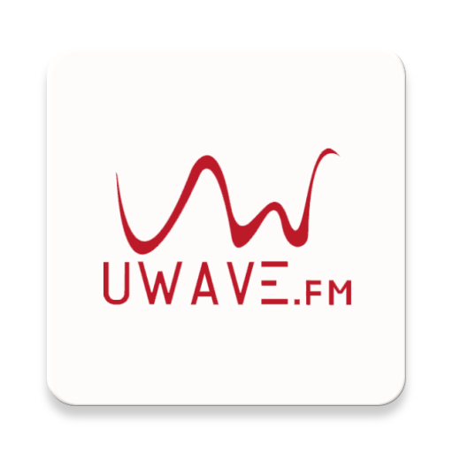
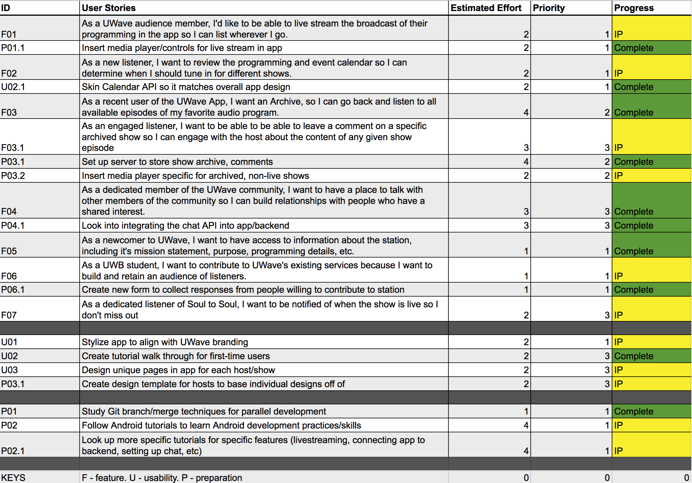
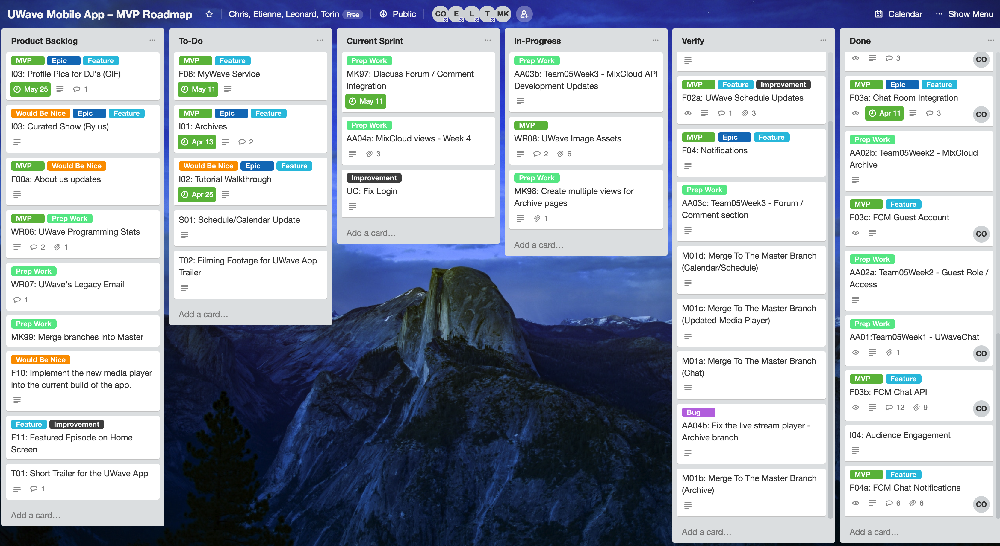
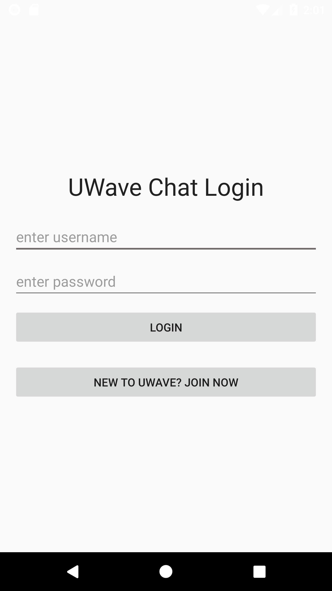
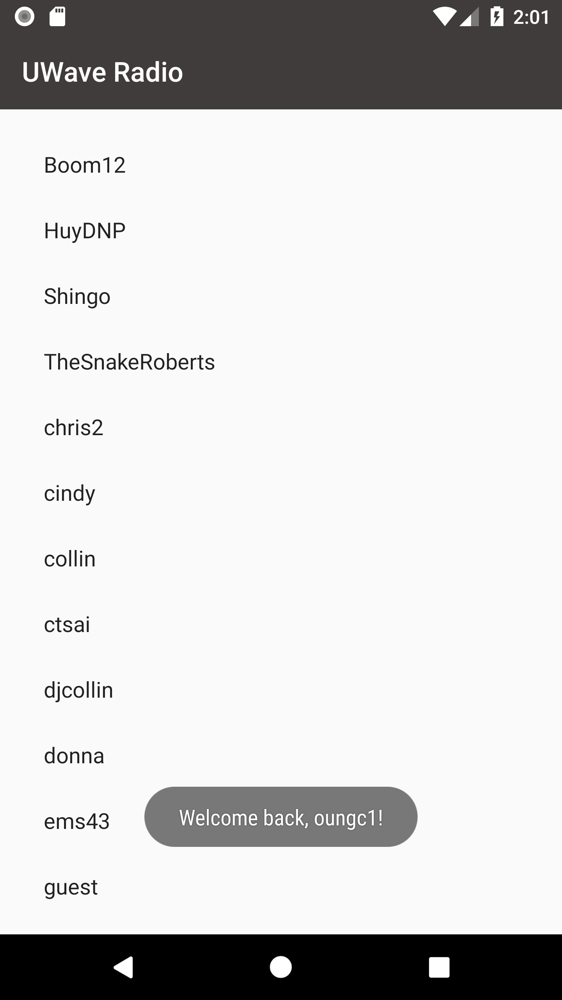
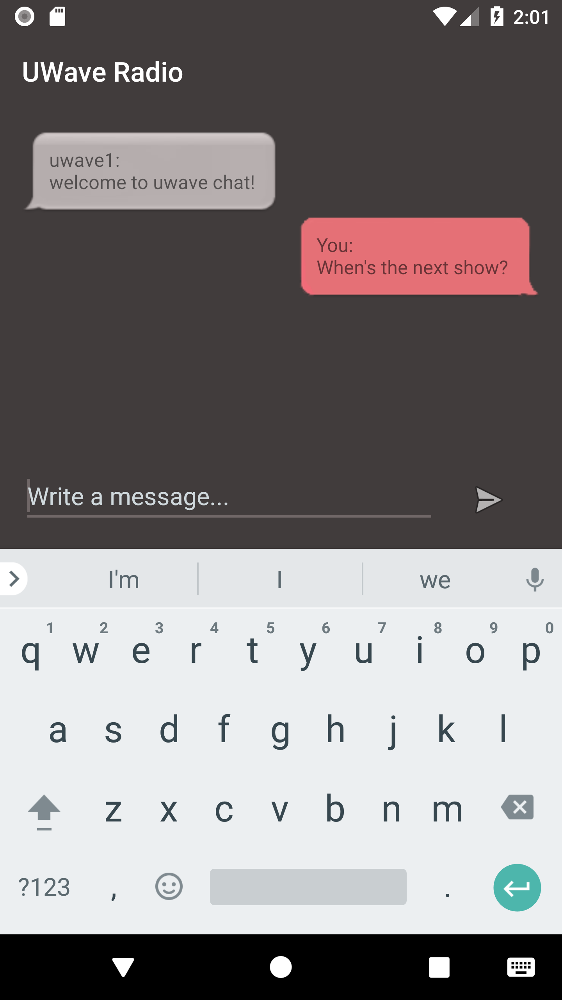

UWaveRadio Android App MVP

A mobile strategy to increase student engagement, retention, and academic achievement at the University of Washington Bothell
Project Description
Client: UWave Radio
Development Team: Chris, Etienne, Leonard, and Torin
Role: Android Developer
Technologies used: Android Studio, Firebase, REST API, Java, JavaScript, XML, Git, Github, Trello and G Suite by Google
Summary
This project was a six-month effort to help the UWave Radio organization—a local radio station at the University of Washington Bothell—reach a wider audience of listeners at the UW Bothell campus. The UWaveRadio app is an Android app solution that encompasses unique music and talk show streaming services. The app allows any student, faculty, and staff member to contribute to UWave Radio's expanding content library, as well as the promotion of local musicians, bands, and community events.
UWaveRadio App - Trailer
The Development Process
Product Backlog
Project Workflow
Main Features




